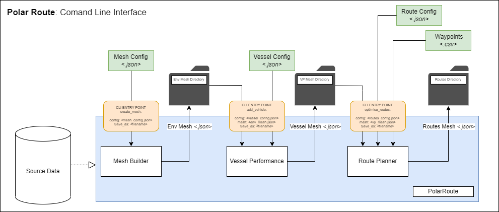

Command Line Interface¶
The PolarRoute package provides multiple CLI entry points, intended to be used in succession to plan a route through a digital environment.

The Command Line Interface entry points of PolarRoutecreate_mesh¶
The create_mesh entry point builds a digital environment file from a collection of source data, which can then be used
by the vessel performance modeller and route planner.
create_mesh <config.json>
positional arguments:
config : A configuration file detailing how to build the digital environment. JSON parsable
The format of the required config.json file can be found in the Configuration - Mesh Construction section of the MeshiPhi documentation.
There are also example configuration files available in the directory examples/environment_config/grf_example.config.json
optional arguments:
-v (verbose logging)
-o <output location> (set output location for mesh)
add_vehicle¶
The add_vehicle command allows vehicle specific simulations to be performed on the digital environment. This vehicle specific
information is then encoded into the digital environment file.
add_vehicle <vessel_config.json> <mesh.json>
positional arguments:
vessel_config : A configuration file giving details of the vessel to be simulated.
mesh : A digital environment file.
The format for the required vessel.json file can be found in the :ref:configuration - vessel performance modeller section of the documentation.
The required mesh.json file can be created using the create_mesh command from MeshiPhi.
optional arguments are
-v (verbose logging)
-o <output location> (set output location for mesh)
The format of the return Vessel_Mesh.json file is explained in :ref:the vessel_mesh.json file section of the documentation.
resimulate_vehicle¶
The resimulate_vehicle command allows vehicle specific simulations to be performed again on an existing vessel mesh.
This allows new models to be easily run using the pre-existing config parameters.
resimulate_vehicle <vessel_mesh.json>
positional arguments:
vessel_mesh : A digital environment file with added vessel specific simulations.
optional arguments are
-v (verbose logging)
-o <output location> (set output location for mesh)
optimise_routes¶
Optimal routes through a mesh can be calculated using the command:
optimise_routes <route_config.json> <vessel_mesh.json> <waypoints.csv>
positional parameters:
vessel_mesh : A digital environment file with added vessel specific simulations.
route_config : A configuration file detailing optimisation parameters to be used when route planning.
waypoints: A .csv file containing waypoints to be travelled between.
The format for the required route_config.json file can be found in the :ref:configuration - route planning section of the documentation.
The required vessel_mesh.json file can be generated using the :ref:add_vehicle command shown above.
The format for the required waypoints.csv file is as follows:
As a table:
| Name | Lat | Long | Source | Destination |
|---|---|---|---|---|
| Halley | -75.267 | -27.216 | X | |
| Rothera | -67.617 | -68.047 | ||
| South Georgia | -54.141 | -36.094 | X | |
| Falklands | -51.953 | -57.969 | ||
| Elephant Island | -60.977 | -55.078 |
In .csv format:
Name,Lat,Long,Source,Destination
Halley,-75.267,-27.216,,X
Rothera,-67.617,-68.047 ,,
South Georgia,-54.141,-36.094,X,
Falklands,-51.953,-57.969,,
Elephant Island,-60.977,-55.078,,
Additional waypoints may be added by extending the waypoints.csv file. Which waypoints are navigated between is determined by adding an X in either the Source or Destination columns. When processed, the route planner will create routes from all waypoints marked with an X in the Source column to all waypoints marked with a X in the Destination column.
optional arguments are
-v (verbose logging)
-o <output location> (set output location for mesh)
-p (output only the calculated path, not the entire mesh)
-d (output Dijkstra path as well as smoothed path)
The format of the returned route.json file is explained in :ref:the route.json file section of this documentation.
calculate_route¶
The cost of a user-defined route through a pre-generated mesh containing vehicle information can be calculated using the command:
calculate_route <vessel_mesh.json> <route>
positional parameters:
vessel_mesh : A digital environment file with added vessel specific simulations.
route : A route file containing waypoints on a user-defined path.
optional arguments:
-v : verbose logging
-o : output location
Running this command will calculate the cost of a route between a set of waypoints provided in either csv or geojson
format. The route is assumed to travel from waypoint to waypoint in the order they are given, following a rhumb line.
The format of the output route.json file is identical to that from the :ref:optimise_routes command.
This is explained in :ref:the route.json file section of the documentation. The time and fuel cost of the route will
also be logged out once the route file has been generated. If the user-defined route crosses a cell in the mesh that is
considered inaccessible to the vessel then a warning will be displayed and no route will be saved.
extract_routes¶
This command allows individual routes to be extracted from a larger file containing multiple routes. It automatically determines the output format from the output filename given. Supported output types are json, geojson, csv, kml and gpx.
extract_routes <route_file.json>
positional parameters:
route_file.json : A file containing multiple geojson formatted routes.
optional arguments:
-v : verbose logging
-o : output location
Plotting¶
Meshes produced at any stage in the route planning process can be visualised using the plot_mesh cli command from GeoPlot.
Meshes and routes can also be plotted in other GIS software such as QGIS by exporting the mesh to a commonly used format such
as .geojson or .tif using the export_mesh command described in the MeshiPhi docs.
plot_mesh <mesh.json>
optional arguments:
-v : verbose logging
-o : output location
-a : add directional arrows to routes
-r : plot an additional route from a file